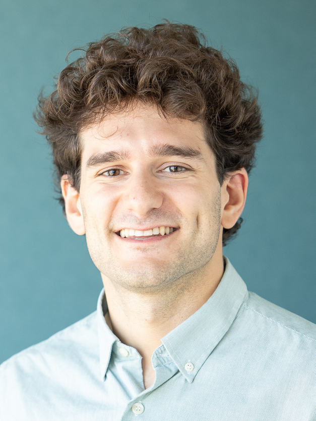

about
I am a Doctoral Student in Machine Learning and a Fellow at the ETH AI Center, advised by Fanny Yang.
I work on safe foundation models, privacy-preserving machine learning, and causal inference. During my PhD, I have spent time at Apple and Google DeepMind; before ETH, I worked at Cambridge and Featurespace.

papers
Full list on Google Scholar.
-
Sparse Autoencoders are Capable LLM Jailbreak Mitigators
-
Efficient randomized experiments using foundation models
-
Doubly robust identification of treatment effects from multiple environments
-
Copyright-Protected Language Generation via Adaptive Model Fusion
-
Detecting critical treatment effect bias in small subgroups
-
Privacy-preserving data release leveraging optimal transport and particle gradient descentShared contribution with K Donhauser.
-
Hidden yet quantifiable: A lower bound for confounding strength using randomized trialsShared contribution with P De Bartolomeis.
-
Approximating full conformal prediction at scale via influence functions
news
- Sep 2025 Joined Google DeepMind as a PhD Student Researcher working with the Gemma post-training team.
- Apr 2025 Presented Copyright-Protected Language Generation via Adaptive Model Fusion as an oral at ICLR 2025 in Singapore.
- Mar 2025 Started working at Apple on image and video generation for Apple Intelligence.
- Oct 2024 Visited the Simons Institute at UC Berkeley.
- Dec 2022 Started my PhD at the ETH AI Center.